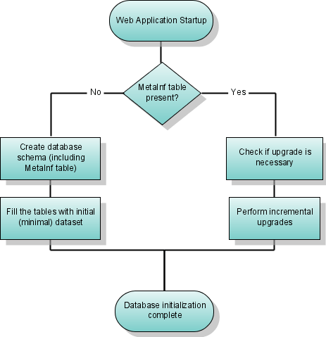
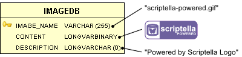

Initialize a database on application startup
This guide shows one way to automate database schema initialization and upgrades with Scriptella, using the Spring ImageDB sample application as its example.
Intended audience
Developers and database administrators.
Purpose
Database initialization is an important part of application deployment. A DBA often applies SQL scripts manually to initialize or upgrade a database. That is reasonable for large applications with complex deployment procedures, but smaller systems can often initialize their database during setup or application startup.
Automatic initialization is especially useful for:
- Demo applications, where a separate database setup step makes evaluation harder.
- Applications with an automated installation procedure.
- Small and medium projects whose customer-run deployment needs to stay simple.

The Metainf table acts as the initialization flag and can also store a database model or application version. Projects that never upgrade an existing schema can omit it.
Prerequisites
The original example is based on the ImageDB sample from Spring 2.0. You can use the same technique with your own Java web application, SQL schema files, and JDBC driver.
Steps
1. Create the database initialization ETL

The ImageDB model contains only one table, but its vendor-specific large-object types and binary content make a portable setup script useful. The following ETL creates a metadata table, chooses a vendor-specific schema, loads data, and leaves a place for later upgrades:
<!DOCTYPE etl SYSTEM "http://scriptella.org/dtd/etl.dtd">
<etl>
<properties>
<include href="webinit.etl.properties"/>
</properties>
<connection driver="$driver" url="$url"
user="$user" password="$password"/>
<script>
CREATE TABLE Metainf (buildnum INTEGER);
INSERT INTO Metainf VALUES (1);
<dialect name="hsql">
<include href="hsqldb-schema.sql"/>
</dialect>
<dialect name="oracle">
<include href="oracle-schema.sql"/>
</dialect>
<dialect name="mysql">
<include href="mysql-schema.sql"/>
</dialect>
<include href="data.sql"/>
<onerror message=".*Metainf.*"/>
</script>
<query>
SELECT * FROM Metainf
<script if="buildnum lt 1">
<!-- Apply upgrades, then record the new build. -->
UPDATE Metainf SET buildnum=1;
</script>
</query>
</etl>The *-schema.sql files contain database-specific DDL. The shared data.sql file can reference BLOB content in external files:
INSERT INTO imagedb(image_name, content, description) VALUES (
'scriptella-logo.png',
?{file 'blobs/scriptella-logo.png'},
'Scriptella ETL logo'
);On later startups, creating Metainf fails because the table already exists. The matching <onerror> handler lets execution continue to the upgrade query.
2. Package the files with the web application
Place these files in a directory inside the WAR, such as /WEB-INF/db:
webinit.etl.xml— the database initialization file.webinit.etl.properties— connection configuration.*-schema.sql— schema creation scripts for each database.data.sql— the initial dataset.blobs/— binary files referenced bydata.sql.
Also place the required JDBC driver, such as hsqldb.jar, in WEB-INF/lib.
3. Run it from a servlet context listener
Create a ServletContextListener that executes the ETL when the application starts:
public class WebDbInitializer implements ServletContextListener {
static void initDatabase(URL etlUrl) throws EtlExecutorException {
EtlExecutor.newExecutor(etlUrl).execute();
}
public void contextInitialized(ServletContextEvent event) {
ServletContext context = event.getServletContext();
try {
initDatabase(context.getResource("/WEB-INF/db/webinit.etl.xml"));
context.log("DB script executed");
} catch (Exception e) {
context.log("Unable to execute DB script", e);
}
}
}Register the listener in web.xml:
<web-app>
<listener>
<listener-class>scriptella.imagedb.WebDbInitializer</listener-class>
</listener>
</web-app>For an HSQLDB deployment on Tomcat, webinit.etl.properties can contain:
driver=hsqldb
url=jdbc:hsqldb:file:${catalina.home}/db/imagedb
user=sa
password=Alternative: integrate with Spring
The Scriptella Spring adapter can start the ETL from an application context:
<bean class="scriptella.driver.spring.EtlExecutorBean">
<property name="configLocation" value="/WEB-INF/db/webinit.etl.xml"/>
<property name="autostart" value="true"/>
</bean>The corresponding properties use the Spring-managed data source:
driver=spring
url=dataSourceResources
- Scriptella reference documentation
- Driver and provider matrix
- Evolutionary Database Design by Martin Fowler and Pramod Sadalage